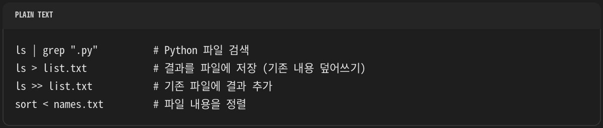

📚 1주차 Linux (2026.10.12 Mon ~ 2026.10.14 Wed)
Total : 3 days
📕 A. Linux 기초 (2026.10.12 Mon)
📃 a. Linux & Ubuntu (리눅스 소개)
- Linux : 서버, 클라우드, 로봇 등 다양한 환경에서 사용되는 오픈소스 운영체제 커널
- Ubuntu : Linux 커널을 기반으로 만들어진 운영체제 배포판
- Terminal : 명령어를 입력하여 시스템을 제어하는 인터페이스
📃 b. WSL2 (우분투 설치)
- WSL2 : Windows에서 Linux 환경을 실행할 수 있도록 지원하는 기능
- Windows를 유지하면서 Ubuntu의 개발 환경을 사용할 수 있음
- 활용 : Python 개발, ROS 2 학습, 리눅스 명령어 실습
📃 c. Directory Commands (폴더 이동 명령어)
| 명령어 | 기능 |
|---|---|
pwd | 현재 경로 확인 |
ls | 파일 및 폴더 목록 확인 |
cd 폴더명 | 해당 폴더로 이동 |
cd .. | 상위 폴더로 이동 |
cd ~ | 홈 디렉터리로 이동 |
mkdir 폴더명 | 폴더 생성 |
📃 d. File Commands (파일 생성 및 관리)
| 명령어 | 기능 |
|---|---|
touch file.txt | 빈 파일 생성 |
cat file.txt | 파일 내용 출력 |
cp 원본 복사본 | 파일 복사 |
mv 기존 새이름 | 파일 이동 또는 이름 변경 |
rm file.txt | 파일 삭제 |
📃 e. File Edit Commands (파일 수정 명령어)
nano file.txt: 터미널에서 파일 편집vim file.txt: Vim 편집기로 파일 수정cat > file.txt: 파일에 내용을 입력하고 저장cat >> file.txt: 기존 파일 내용 뒤에 추가
📃 f. Search Commands (검색 명령어)
| 명령어 | 기능 |
|---|---|
find . -name "*.py" | 현재 경로에서 Python 파일 검색 |
grep "문자열" file.txt | 파일에서 특정 문자열 검색 |
which python | 실행 파일 경로 확인 |
📃 g. Pipe and Redirection (파이프와 리디렉션)
- Pipe (
|) : 앞 명령어의 결과를 뒤 명령어의 입력으로 전달 - Redirection (
>,>>) : 명령어의 결과를 파일에 저장하거나 추가 - Input Redirection (
<) : 파일 내용을 명령어의 입력으로 전달

PLAIN TEXT 코드
💡 핵심 요약
- Linux : 명령어 기반 시스템 환경의 기본 이해
- WSL2 + Ubuntu : Windows에서 Linux 개발 환경 구축
- Directory & File Commands : 파일 시스템 탐색 및 관리
- Search Commands : 파일과 문자열 검색
- Pipe & Redirection : 명령어 연결 및 입출력 제어
🎯 학습 목표: Linux 터미널에서 디렉터리 이동, 파일 관리, 검색 및 명령어 입출력을 스스로 수행할 수 있다.